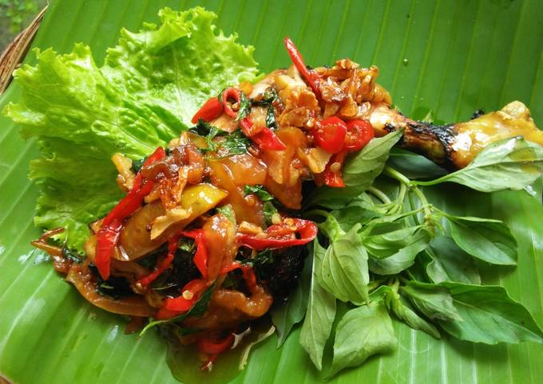
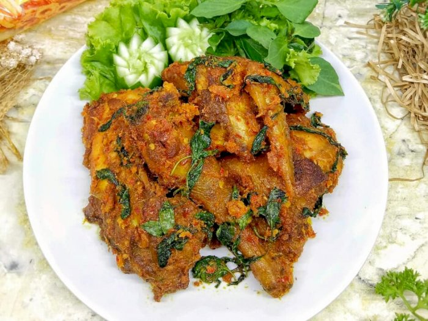
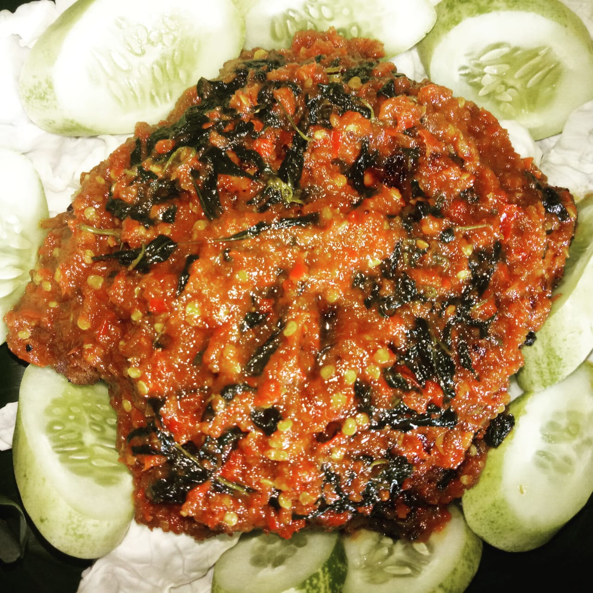

Foto Masakan



Langkah-Langkah
- Haluskan cabe merah, bawang merah, bawang putih, jahe, kunyit, dan cabe rawit (bisa diblender)
- Tumis bumbu halus dengan sedikit minyak goreng masukan daun salam, daun jeruk, serai dan lengkuas setelah wangi masukan ayam, garam, lada, ketumbar, penyedap rasa, gula dan air 1 gelas ungkep ayam tes rasa
- Setelah air menyusut masukan daun kemangi aduk2. Panaskan teflon beri 1 sdm margarin bakar ayam diatas teflon dengan api kecil. bolak balik, sajikan dengan lalapan dan sambal terasi